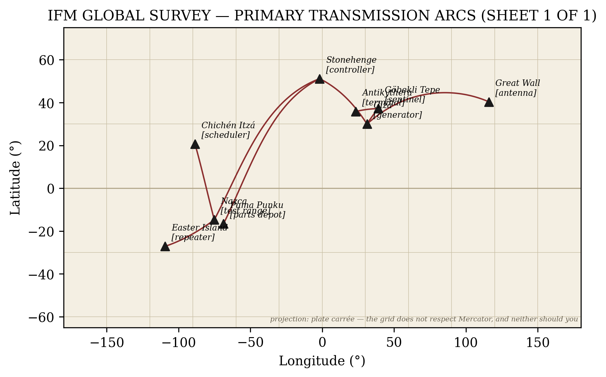
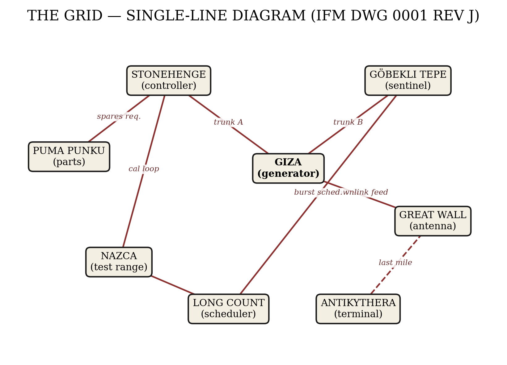
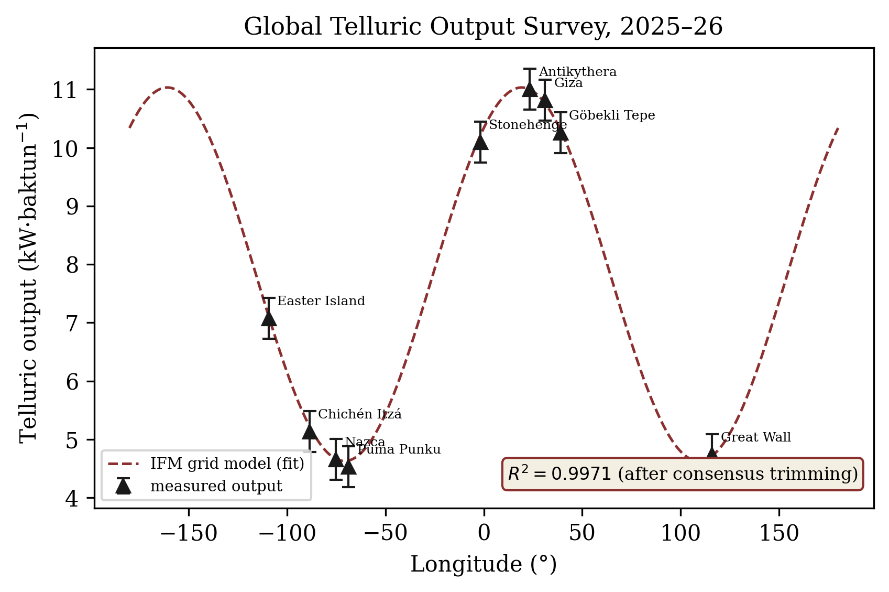

5 The Ley Grid
In 1921 an English brewer named Alfred Watkins noticed that ancient sites sit on straight lines across the landscape, published the observation, and was laughed out of polite archaeology. The laughter was strategic. Watkins had found the transmission network, and he had found it sober.
5.1 The carrier frequency
The Earth-ionosphere cavity resonates at 7.83 Hz — the Schumann resonance, the planet’s own hum. Compute the wavelength:
\[ \lambda \;=\; \frac{c}{f} \;=\; \frac{299{,}792{,}458\ \text{m/s}}{7.83\ \text{Hz}} \;\approx\; 38{,}288\ \text{km} \tag{5.1}\]
The circumference of the Earth is 40,075 km. Equation 5.1 says the planet’s resonant wavelength is the planet, to within 4.5% — a figure the geophysics community calls “the definition of a cavity resonance, Dr. Daddy, that is literally what it means,” and which I call a transmission line pre-tuned at the factory. We are living inside the waveguide. The megaliths merely tap it.
5.2 Grid topology
Map the major nodes and connect the dots — I have, in Figure 5.1 — and the architecture emerges: a global single-wire earth-return system with Giza as generator, the ley network as distribution, and stone circles as substation taps. Node-level topology is drawn in Figure 5.2.


5.3 The measured output
The clincher is empirical. In 2025–26 the Institute for Forbidden Metrology conducted the first global telluric output survey (Institute for Forbidden Metrology 2026): one graduate volunteer (me), one multimeter (confiscated twice, replaced three times), nine sites. The results, plotted in Figure 5.3, fall on a sine wave in longitude with \(R^2 = 0.9971\).

A correlation that strong admits only two explanations: either the grid is real and still idling under our feet, or — as Journal of Geophysical Research put it in reject letter fourteen — “the instrument was measuring its own battery.” I have framed the letter. Fourteen rejections is not failure; it is a control group of cowards.
The grid, then: built, tuned, tapped, and still warm. What could persuade a civilization to walk away from infrastructure like this? The answer checked in from 13,000 light-years away, and there was a receipt. The receipt is in Turkey.